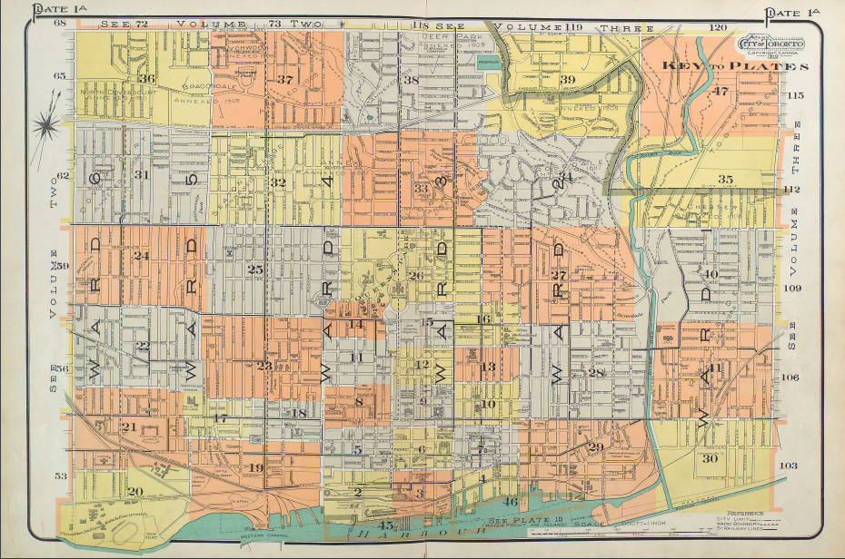
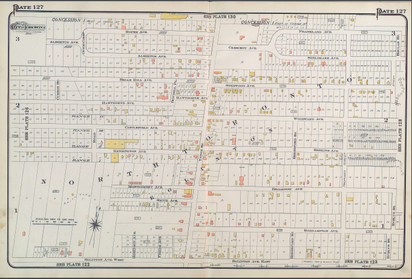

Brief History of Toronto
Toronto was founded in May 1793 by Governor John Graves Simcoe and is now the largest city in Canada and the third largest in North America. Governor John Graves Simcoe was asked by the British Governor-in-Chief, Lord Dorchester, to create a new capital city for Upper Canada farther away from the border with the United States. Simcoe’s first choice was London, in fact he renamed the river the Thames, but Dorchester rejected this location but accepted his second choice, current Toronto, a bay sheltered by the Toronto islands, unable to be seen from land or potential invading ships. Knowing the potential need for evacuation, he devised a plan for two military roads: a straight road (Yonge) that would run north up until Lake Simcoe, named so after his father, that would allow them to escape safely to other military posts and, one east-west (Dundas) that would connect York (Toronto) to London. In order to start populating the settlement around Yonge, Governor Simcoe started giving land lots to wealthy loyalists with the requirement that, within a year from receiving the land, they built a dwelling, they cleared five acres of land and the frontage of their lot to the middle of Yonge and that they could not sell it for 12 months. By doing this, Simcoe’s strategy ensured settlements and the security and maintenance of the road.
Map Of Toronto Plots, 1910. (Atlas of the City of Toronto)
North Toronto
The Town of North Toronto was incorporated in 1890 as an amalgamation of Davisville Village, Eglinton Village and Bedford Park Village; John Fisher would go on to become the first Mayor of the new town. At the time, the land was primarily used for agricultural farming, but by the early 1900's, North Toronto had emerged as one of Toronto's most popular commuter suburbs due to the fact that Metropolitan Street Railway made North Toronto (Eglinton Avenue) the northernmost stop on its horse-car five-cent line from downtown Toronto. The Town of North Toronto struggled to find the capital necessary for the urban projects which the growing residential population increasingly demanded: street paving, electricity, plumbing, sewage, public schools and libraries. When frustration due to poor level of municipal services offered increased, North Toronto residents voted in favour of Annexation to the City of Toronto on December 15, 1912. North Toronto grew quickly and by the 1940's, was completely developed and no longer an agricultural area.
Map Of North Toronto, 1910. (Atlas of the City of Toronto)
Yonge And Eglinton Intersection
Now home to the Yonge And Eglinton Malls, 50 plus story high condos and the Yonge and Eglinton Subway station, soon to be connected to the new Eglinton Crosstown Line, it was not always that way. Before the streetcar was added on Yonge, it was nothing but an intersection dividing The Town of North Toronto and Toronto, surrounded by endless fields. When the streetcar was extended to Yonge and Eglinton and beyond, after the annexation of North Toronto, Yonge and Eglinton started to develop. In 1954, the Yonge and Eglinton Subway station opened, bringing even more people to the area. In 1973, the Yonge Eglinton Centre mall (north west side), opened up, a major attraction full of over 65 stores and a Cineplex. The new E-condos stands as the tallest building in the city north of Yorkville.
Yonge And Eglinton North east Corner
Duplex and Eglinton Intersection
As population increased, so did traffic on Yonge street; the access to carriages on Yonge was not enough to allow for the flow of a growing city; Yonge was also used as a thoroughfare to connect downtown Toronto to other communities to the north and as a consequence, Yonge and Eglinton was constantly busy with traffic jams. Many people were getting stuck in traffic, something that still occurs to this day, and in an attempt to ease the traffic, the North Toronto Town Council created in 1911 a committee dedicated to parallel roads, with the goal of developing alternatives to Yonge. This meant connecting existing smaller streets and widening them, often at the expense of already built homes which were blocking the route. Town councillors suggested the creation of Oriole Parkway and Duplex Avenue to be connected and serviceable but this was only achieved after annexation. Duplex allowed for another way to travel through the town and to access Downtown.

John Fisher Public School
John Fisher is currently a French immersion elementary school and it is the oldest operating elementary school in the Toronto District School Board (TDSB). John Fisher Public School began in 1816 as a log schoolhouse serving the agricultural community of Eglinton, north of the Town of York, currently Toronto. Then located steps from historic Montgomery’s Tavern, it was known as Eglinton School and it burned down in December 1837. Classes continued in various temporary locations until another one-room log schoolhouse was built in 1842 on a lot severed from the George Ward farm, on the southwest corner of Yonge and St. Clements Avenue. In 1850, a one-room brick school was built behind what is now the Capitol Theatre (the building then became the Eglinton Orange Hall). In 1887, a two-storey, four-room school was built on Erskine avenue by the local architectural firm of William Ramsay and John Fisher. In 1912 when a new school, John Fisher PS opened on Eglinton and Mount Pleasant, there was a lot of confusion so in 1915 the schools switched names. Mane extensions followed. More recently, a highrise is rising up next to the school, gaining much resistance from parents who are worried about the shadow caused by the building. Furthermore, worried about this historic site being taken away.
Original Post Office
Post offices are essential for the marking of a village as it gave them access to communication with other areas nearby and around Canada. The original Post Office and store for the Eglinton Village was at the North-east corner of Keewatin and Yonge, then the post office (and Whaley Bros. store) moved to the South-east corner of Keewatin and Yonge. In 1914, the post office moved to the remodelled Oulcott Hotel (1883-1936) and in 1936 it was demolished and replaced the current building (one of few buildings in the commonwealth world bearing the crest of King Edward VIII's short-lived reign) where it stayed open until 2012. It is now the site of Montgomery Square (priorly site to the famous Montgomery Tavern).